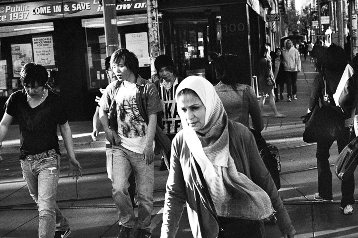
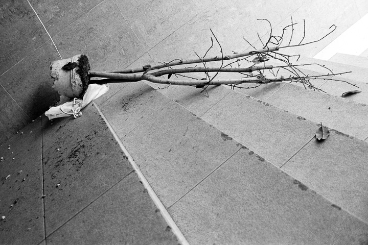
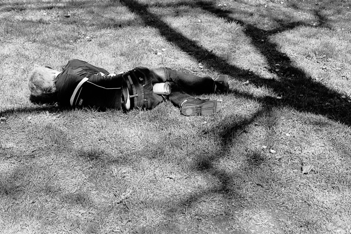
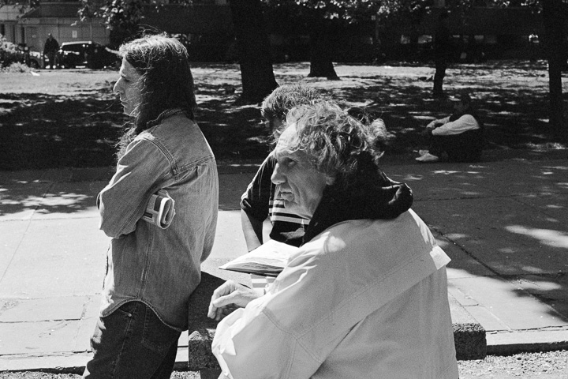
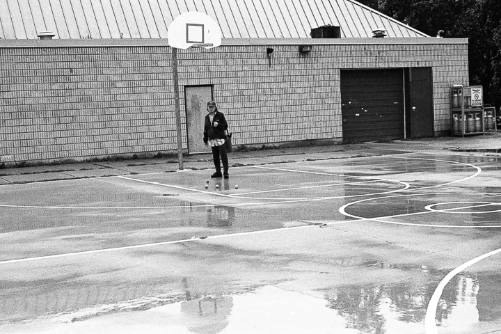
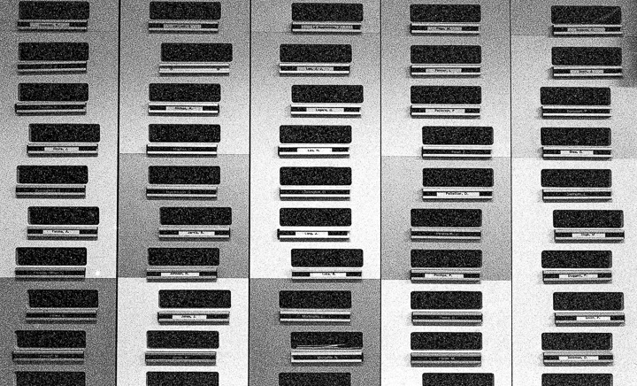
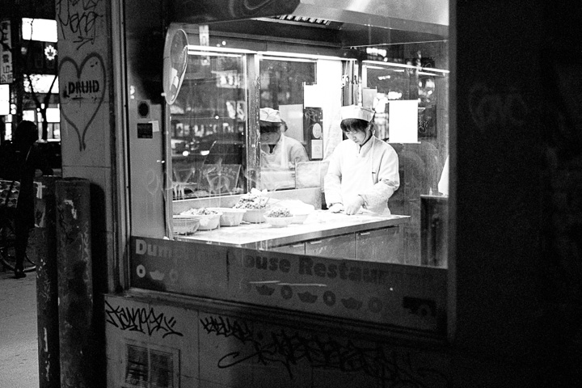

Examining the wide and profound gap that lies between us.
a•byss | əˈbis | : a wide or profound difference between people; a gulf: the abyss between the two people.
Examining the wide and profound gap that lies between us.
a•byss | əˈbis | : a wide or profound difference between people; a gulf: the abyss between the two people.

The Abyss I (2013), 12" x 18" Fibre-based pigment print

Fallen Leaves (2013), 12" x 18" Fibre-based pigment print

Empty Bottle Grip (2013), 12" x 18" Fibre-based pigment print

St. James Sirens (2013), 12" x 18" Archival Inkjet Print

Man with Three Rubber Balls (2013), 12" x 18" Archival Inkjet Print

Mail Slots (2013), 12" x 18" Archival Inkjet Print

Nighthawk (2013), 6" x 9" Archival Inkjet Print
This body of work was produced during the Magnum Workshop that ran during the 2013 Contact Photography Festival in Toronto. My deepest thanks to Moises Saman and Zoe Strauss for their guidance, honesty, and vision. I would also like to thank Nikon for providing me with a scholarship to attend this workshop.